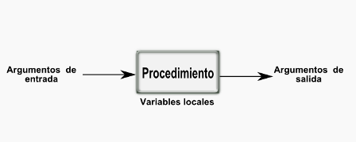

Capítulo IV - Subprogramas
Una conocida frase de los políticos es divide y vencerás. Esto mismo es aplicable en programación de computadores o en la solución de cualquier problema complejo. La estrategia es identificar en el análisis inicial del problema cuáles son las partes en las que se puede dividir el problema para solucionar cada una de las partes individualmente y luego ensamblarlas dando solución al problema originalmente planteado.
Los subprogramas son porciones de código que reciben unos argumentos de entrada, realizan un procedimiento con estos y responden con una información. La Imagen (GALEANO, 2011u) esquematiza lo que es un subprograma y adicionalmente muestra un concepto adicional que hace de estas particiones una herramienta muy poderosa, es el concepto de variable local.

En programación se hace una clasificación de las variables según el ambiente en el cual se puede acceder a ellas, así una variable global es de acceso general, mientras que a una variable local solo puede accederse en su ambiente o subprograma específico. Esto permite reducir conflictos de nombre en los diferentes subprogramas, ya que se puede usar el mismo nombre en los subprogramas sin ningún inconveniente. En los subprogramas todas las variables que se asignen son de tipo local, a menos que se especifique explícitamente que es una variable global.
En PYTHON la palabra clave para designar una variable como global es global dentro de la respectiva estructura de subprograma.
Objetivos de aprendizaje
- Identificar las partes en las que se puede dividir el problema.
- Comprender los conceptos de subprograma, variable global, variable local.
- Conocer diferentes estrategias para fragmentar o modularizar un programa o aplicación de computador.
Subtemas del capítulo
Los lenguajes de programación disponen de diferentes estrategias para fragmentar o modularizar un programa o una aplicación de computador que se requiera desarrollar. En este capítulo discutiremos 3 formas de fragmentación que denominaremos así:
Funciones en línea
Las funciones en línea, o también denominadas funciones anónimas, nos permiten programar funciones matemáticas que podrán ser llamadas posteriormente en el programa.
Para su codificación en PYTHON se usa la palabra clave “lambda”, seguida de la variable que se va a usar, luego los dos punto “ : ” y al final la expresión matemática que se va a calcular. Veamos el siguiente ejemplo en el interface (python shell):
>>> f1 = lambda x:x**2Con esta instrucción, a la variable f1 se le asigna la función elevar al cuadrado un valor x cualquiera, el cual será el argumento de entrada de la función. Este valor de entrada lo elevara a la potencia 2 y retornara este valor a donde se asigne.
Para acceder o utilizar posteriormente esta función basta escribir el nombre asignado con el argumento de entrada entre paréntesis. Por ejemplo si deseamos calcular el cuadrado del valor 5, se escribe:
>>> f1(5)su resultado en pantalla será 25.
Este valor también podrá ser asignado a otras variables, por ejemplo:
>>> t = f1(5)Aquí el valor 25 será asignado a la nueva variable t.
Las funciones lambda en PYTHON también permiten entrada y salida de datos múltiples.
Veamos el siguiente ejemplo:
>>> sures = lambda x,y : [x+y, x-y]Esta función se programa para dos datos de entrada x,y. Responde con dos datos, la suma x+y, y la resta x-y. Si se hace el llamado de la función sures(8,10) se tendrá como respuesta [18, -2].
 )
)Funciones independientes
Las funciones independientes son fraccionamientos de programas más flexibles, en el sentido de que permiten cualquier tipo de código en el procedimiento. Su estructura básica tiene un esquema como el de la Imagen esquema de función con su nombre propio definido por el programador.
En lenguaje PYTHON la palabra clave que se utiliza para programar una función es def seguida de su nombre y los argumentos de entrada y los dos puntos “ : ”. Luego en indentación el código del procedimiento y termina con la palabra clave return cuando se requiere programar valores de salida. Veamos los siguientes ejemplos para mostrar la flexibilidad de estas funciones:
- Función sin argumentos
- Función con argumentos de entrada
- Función con argumentos de entrada opcionales
- Función con argumentos de entrada y salida
- Función con documentación propia
Ejemplo de función sin argumentos en interface (python shell):
>>>def saludo():
print 'Hola'
print 'Afectuoso saludo de tu PC'
La función que se programa se denomina saludo y el procedimiento que realiza ésta en las dos líneas siguientes después de los dos puntos “ : ”. No requiere de argumentos de entrada, pero por sintaxis se deben colocar los paréntesis vacíos. Para llamar la función se escribe su nombre con los paréntesis como se muestra a continuación:
>>> saludo()
Hola
Afectuoso saludo de tu PC
El ordenador responde con las dos líneas en la pantalla y no devuelve ningún tipo de dato. Por tanto si escribimos q = saludo(), se obtendrían las mismas líneas y q sería una variable sin información.
Ejemplo de función con argumentos de entrada en interface (python shell):
>>> def saludo1(nombre):
print 'Hola, amigo ' , nombre
print 'Un afectuoso saludo de tu PC'
Esta función denominada saludo1 tiene como argumento de entrada la variable nombre y su procedimiento es escribir en pantalla un saludo con el dato del argumento de entrada.
Veamos el llamado y respuesta de esta función en el interface (python shell):
>>> saludo1('Pepe')
Hola, amigo Pepe
Un afectuoso saludo de tu PC
Ejemplo de función con argumentos de entrada opcionales en interface (python shell):
>>> def saludo2(nombre='Fulano',apellido='De Tal'):
print ' Hola, mister ',nombre , ' ', apellido
print ' Un afectuoso saludo de este PC'
En este ejemplo la función saludo2 se programa con dos argumentos de entrada: nombre y apellido. Al argumento nombre se le asigna la opción 'Fulano' si no se especifica explícitamente otro nombre, y al argumento apellido se le asigna la opción 'De Tal'. Así el llamado de la función puede variar según los argumentos que se especifiquen, como se muestra:
>>> saludo2() #llamado sin argumentos
Hola, mister Fulano De Tal
Un afectuoso saludo de este PC
>>> saludo2('Andrew','Valens') #llamado con los dos argumentos
Hola, mister Andrew Valens
Un afectuoso saludo de este PC
>>> saludo2(apellido='Cualquiera') #llamado con un solo argumento
Hola, mister Fulano Cualquiera
Un afectuoso saludo de este PC
>>>
En cada caso se muestra cómo se hace el llamado de la función y su respuesta, donde el programa asume un dato si no se le especifica explícitamente el argumento de entrada.
Ejemplo de función con argumentos de entrada y salida en interface (python shell):
>>> def saludo3(nombre='Fulano',apellido='De Tal'):
print ' Hola, mister ',nombre , ' ', apellido
print ' Un afectuoso saludo de este PC'
ID = 'Sr. ' + nombre + ' ' + apellido
return ID
En esta función aparece al final la palabra clave 'return' que especifica qué variable o variables locales de salida devuelve la función, además de realizar el procedimiento completo definido por el código. Para este caso al llamar la función su respuesta es la realización del procedimiento y termina entregando la variable de salida ID, como se muestra a continuación:
>>> saludo3()
Hola, mister Fulano De Tal
Un afectuoso saludo de este PC
'Sr. Fulano De Tal'
También es posible asignar la salida a otra variable:
>>> y = saludo3()
Hola, mister Fulano De Tal
Un afectuoso saludo de este PC
>>> print y
Sr. Fulano De Tal
Aquí la salida de la función saludo3 es asignada a la variable y que se muestra en pantalla al usar la instrucción print.
Ejemplo de función con documentación propia en interface (python shell):
>>> def saludo4(nombre='Fulano',apellido='De Tal'):
"Esta funcion es un ejemplo con documentacion propia"
print ' Hola, mister ',nombre , ' ', apellido
print ' Un afectuoso saludo de este PC'
ID = 'Sr. ' + nombre + ' ' + apellido
return ID
Esta función saludo4 tiene adicionalmente un texto después de los dos puntos que permite documentar dentro de la estructura de la función una breve información o primera ayuda del uso de la función. Para acceder a esta información basta escribir:
>>>saludo4.__doc__
'Esta funcion es un ejemplo con documentacion propia'
>>>
El programa responde con el texto inicial que se escribió en la función.
Subprogramas o módulos
Los subprogramas o módulos son en sí códigos completos que pueden tener su propia estructura y ser llamados por otros programas según las necesidades. Estos subprogramas no están restringidos a tener entradas y salidas específicas.
En lenguaje PYTHON estos subprogramas son códigos independientes que se invocan o incluyen en cualquier otro programa con la palabra clave import. Veamos el ejemplo de crear un subprograma con unas constantes y una función que deseamos llamar desde otro programa o desde el interface (python shell):
Subprograma escrito en el editor y guardado con el nombre subprog1.py
def recordar():
print '1. 180 grados son PI radianes '
print '2. La constante neperiana e se debe a John Napier'
Este subprograma define la constante Cpi que contiene el número pi, la constante Ce que contiene el número Neperiano y una función que se llama recordar y que presenta en pantalla dos frases para recordar una información escrita.
Una forma de invocar el subprograma para utilizar sus constantes y su función en el ambiente del interface (python shell) es usando la palabra clave import seguida del nombre del archivo:
>>> import subprog1Con esta instrucción ya podemos invocar las constantes y la función que están programadas en el archivo subprog1.py usando la siguiente escritura:
>>>subprog1.Ce
2.718281
>>> subprog1.Cpi
3.141592
>>> subprog1.recordar()
1. 180 grados son PI radianes
2. La constante neperiana e se debe a John Napier
>>>
Observe que se escribe primero el nombre del archivo y después del punto, el nombre de la variable respectiva o la función.
Una forma alternativa de invocar sólo parte de un subprograma, es usando la palabra clave from como en el ejemplo siguiente:
>>>from subprog1 import Cpi
>>> Cpi
3.141592
Aquí se especifica que del archivo subprog1.py se incluya en el ambiente la constante Cpi, la cual puede ser llamada directamente con su nombre original. La otra constante Ce y la función recordar() no quedan incluidas en el ambiente hasta tanto no son llamadas explícitamente. Por ejemplo, podemos hacer el llamado así:
>>> from subprog1 import Ce, recordar
>>> Ce
2.718281
>>> recordar()
1. 180 grados son PI radianes
2. La constante neperiana e se debe a John Napier
>>>
De esta manera se puede ser selectivo en la parte o porción del subprograma que se desea incluir.
Más adelante discutiremos otros tipos de estructuras de programación que permiten la fragmentación de los programas facilitando la solución de los problemas y la escritura de códigos en los lenguajes de programación.
Nota: A continuación se encuentran las referencias bibliográficas utilizadas para la construcción de los contenidos de este capítulo: